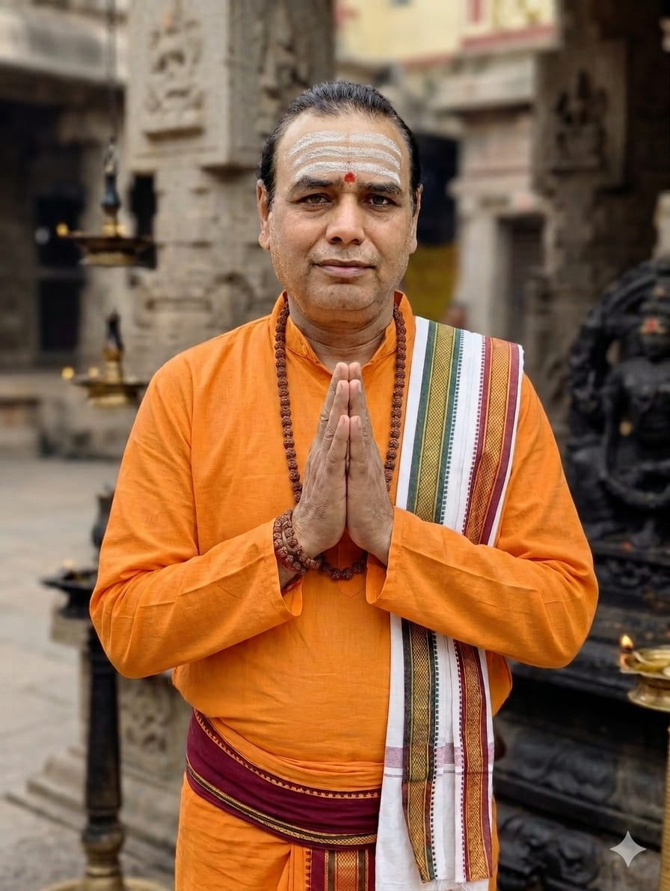

Mahant Ji Photo Gallery



IBR Achiever | Author | Poet | Yogacharya | Spiritual Scholar
Recognized by India Book of Records for achieving 18 academic certificates
Mahant of Jyotirling Shivmath Since 1998
Mahant Rajesh Kumar Tiwari “Ranjan” is an Indian author, poet, spiritual scholar and IBR Achiever recognized by India Book of Records for achieving 18 academic certificates comprising degrees and diplomas from various institutions between 1985 and 2024.
He has contributed in the fields of literature, spirituality, yoga, Sanskrit studies and Indian philosophy. He is also known as the composer of the original Shivtandavak Stotra dedicated to Lord Shiva.
Since 1998, he has been serving as the Mahant of Jyotirling Shivmath, Lucknow.
Application ID: 108203
Mahant Rajesh Kumar Tiwari “Ranjan” was officially recognized as an “IBR Achiever” by India Book of Records.
This recognition was granted for achieving 18 academic certificates, including degrees and diplomas from various schools, colleges and universities between 1985 and 2024.
The achievement was confirmed by the Editorial Board of India Book of Records on September 23, 2025 after verification of educational records and submitted evidence.
| Qualification | Institution / University |
|---|---|
| MBA (Information System) | Sikkim Manipal University |
| LLB | RML University, Faizabad |
| M.A. (Psychology) | IGNOU |
| M.A. (Sanskrit) | IGNOU |
| M.A. (Yoga) | UPRTOU |
| M.A. (Jyotish) | IGNOU |
| M.A. (Hindi Sahitya) | Hindi Sahitya Sammelan, Allahabad |
| M.A. (Philosophy) | Kanpur University |
| M.A. (Political Science) | Kanpur University |
| M.A. (Sociology) | Kanpur University |
| B.Sc. (Physics, Maths, EVS) | UPRTOU |
| B.A. (Hindi, Philosophy, Political Science) | CSJM University, Kanpur |
| Madhyama Visharad | Hindi Sahitya Sammelan, Allahabad |
| Diploma O Level | National Institute of Electronic and Information Technology (NIELIT) |
| Diploma in RTI | National Institute of Public Administration |
| Intermediate (Biology + Sanskrit) | UP Board Allahabad |
| Intermediate (Science + Maths) | UP Board Allahabad |
| High School (Science) | UP Board Allahabad |


Shivtandavak is an original devotional composition dedicated to Lord Shiva and composed by Mahant Rajesh Kumar Tiwari “Ranjan”. This literary work is different from the traditional Ravana Shiv Tandav Stotra and represents an independent spiritual and poetic creation based on devotion towards Lord Shiva.
The original composition of Shivtandavak was written in 1988 at the age of 17 while the author was studying B.Sc. at Christian PG College, Lucknow. The composition reflects elements of Sanskritic expression, spiritual philosophy, devotion, poetic rhythm and traditional Shaiva thought.
Shivtandavak is regularly recited at Jyotirling Shivmath and is regarded as one of the significant literary-spiritual works composed by the author.
‘शिवताण्डवक’ भगवान शिव को समर्पित एक मौलिक काव्य रचना है, जिसके रचनाकार महंत राजेश कुमार तिवारी “रंजन” हैं। यह रचना पारंपरिक रावण कृत शिव तांडव स्तोत्र से भिन्न एक स्वतंत्र आध्यात्मिक एवं साहित्यिक कृति है।
इसकी मूल रचना वर्ष 1988 में उस समय की गई थी जब रचनाकार की आयु 17 वर्ष थी तथा वे क्रिश्चियन पी.जी. कॉलेज, लखनऊ में बी.एससी. के छात्र थे। इस रचना में संस्कृतनिष्ठ अभिव्यक्ति, आध्यात्मिक दर्शन, शिवभक्ति तथा पारंपरिक शैव चिंतन की विशेष झलक मिलती है।
‘शिवताण्डवक’ का पाठ ज्योतिर्लिंग शिवमठ में नियमित रूप से किया जाता है तथा इसे रचनाकार की प्रमुख आध्यात्मिक-साहित्यिक कृतियों में माना जाता है।
Original devotional composition dedicated to Lord Shiva.
Read Shivtandavak Stotraनिःशुल्क रुद्राभिषेक और शिव पूजा – लखनऊ, उत्तर प्रदेश